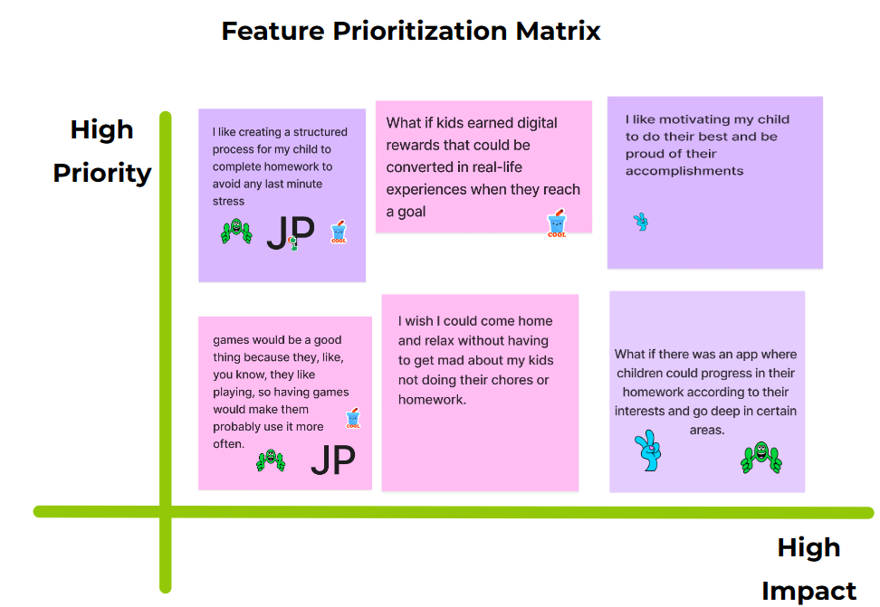
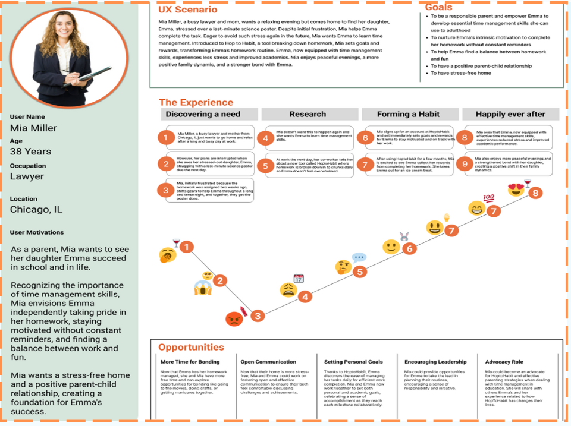
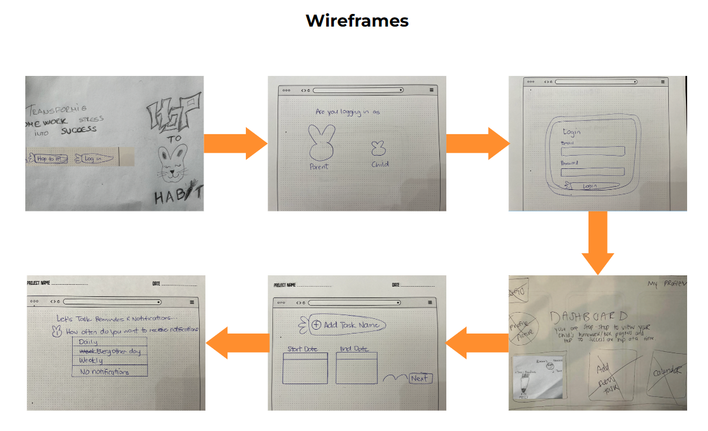
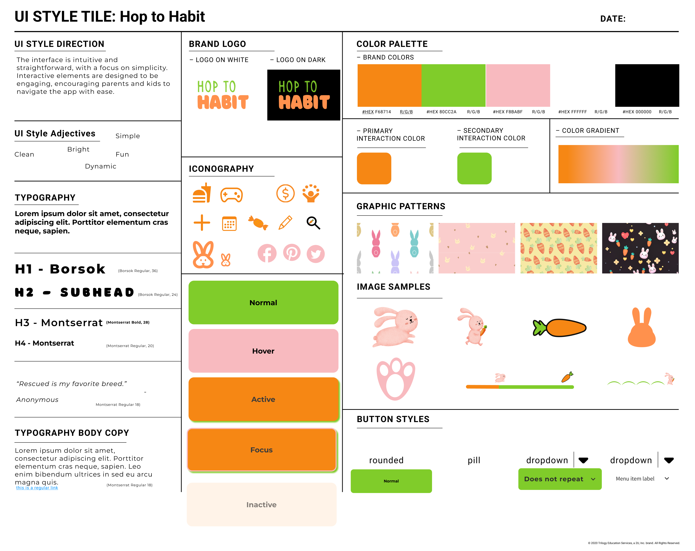
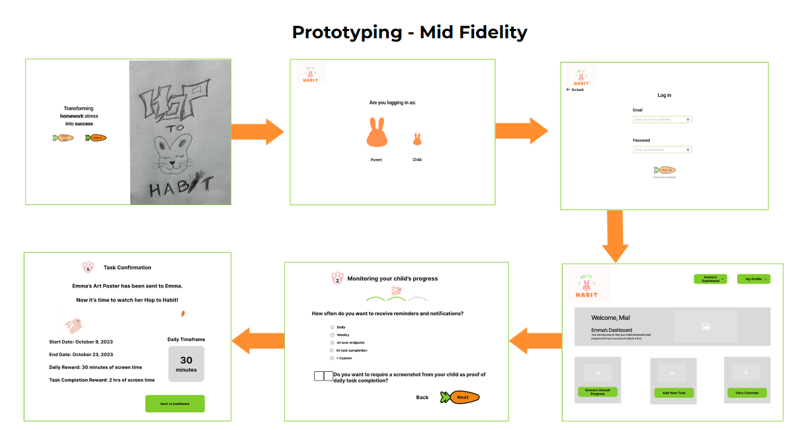

Building Habits...One HOP at a Time

Project OVERVIEW
Helping parents and their children to build good habits step by step.
The Problem
When faced with procrastination-related homework situations, children experience anxiety due to looming deadlines, while parents feel the added stress of juggling yet another responsibility.
Proposed Solution
We propose developing a tool that breaks down tasks into manageable daily chunks and incorporates a rewarding system to motivate task completion.
Task
We aim to create a user-centric tool that not only reduces stress for both parents and kids, but also cultivates a sense of accomplishment, contributing to a happier and more balanced family life.
Roles
Team members:
Joliot Palmes,
Zorka Pretrova,
Jimena Olivares,
Dora
Montes
I served as a UX/UI designer, working both- providing support to my group in crating
research plan,also individually by doing user
interviews, analyzing data, prototyping, UI design in Figma and validation.
Project specifications
Duration: 3 weeks
Tools:


The Research
We start our project with making good Reserch plan and organization depending of the timeframe we was given, thats way we skip the qwantitative method and we went with qwantitative research with 1:1 interview so we can gatter dipper and better insides from the users.

Qualitative UX Research - 1:1 interview
We conducted 6 interviews.Interviewees were all parents of children aged 6 to 12 years old. Based on our questions, we succeeded in gathering a lot of deeper insights and data to use for our future steps. I wish we had more time to conduct additional interviews, not only with parents but also with children, to observe how the insights of the parents align with those of the children. Hew are some qwote from parents:

Prioritization Matrix
We alalize all the data making the Affinity Diagram, it was so many deep answers, varairy of prespectives, it was intresting to see how parents can be diffrent or similar in some areas. We was devoted to try find the best way to help our users to solve their paint points and hilight the positive

Empaty map
We wrap it up all the data and depents of the information we getter to create parent Empaty map

USER PERSONA
After synthesizing our data, we came to conclusion and crete one of our User Persona

Definition & Ideation
The Ideate Phase generating ideas true Brainstorming methods
I Like, I Wish What If
We were brainstorming ideas for our feature based on our previous findings and discoveries. It's enjoyable when more people are working, and you can see different views, ideas, and perspectives. Except for being very useful, it was a fun part of the process.
User Insight Statement
Through user interviews, we've gained valuable insights into the challenges faced by parents and children in managing homework-related stress. Parents expressed a sincere desire to aid their school-age kids in developing effective time management skills. The struggle intensifies with mounting academic demands and the need to motivate children effectively. Our users want a solution that simplifies tasks and fosters positive work habits. By understanding these needs, we aim to create a user-centric tool that not only reduces stress for both parents and kids, but also cultivates a sense of accomplishment, contributing to a happier and more balanced family life.
Problem Statement
Through user interviews, we uncovered a recurring challenge: when faced with procrastination-related homework situations, children experience anxiety due to looming deadlines, while parents feel the added stress of juggling yet another responsibility. Parents expressed a genuine desire to support their school-age kids in developing effective time management skills and finding the right way to motivate them. To address this, we propose developing a tool that breaks down tasks into manageable daily chunks and incorporates a rewarding system to motivate task completion. This could lead to not only happier children who are self-motivated and grasp the essence of time management, but also happier parents witnessing the positive development of their children's work ethic. Striking a balance between homework and fun becomes achievable and fosters a healthier and more harmonious family dynamic.
Value Proposition
We are developing ‘Hop to Habit’ to help parents of school-age children navigate the recurring challenge of homework-related stress and procrastination. Our innovative tool breaks down tasks into manageable daily chunks and incorporates a rewarding system, transforming homework stress into success. Our approach is grounded in addressing the genuine desire expressed by parents to support their kids in developing effective time management skills. So, let’s 'Hop to Habit'—where achieving a balance between homework and fun becomes not just a possibility, but a reality.
UX Storytelling
In this part, we want to showcase the ideal behavior of our users. We're doing our best to cover the emotional, intellectual, and behavioral aspects of the user persona. Perhaps, in the future, if we have more time, it would be beneficial to create additional user personas, considering different demographics, ages, etc., to gain diverse perspectives.
User Scenario
Mia Miller, a busy lawyer and mom, wants a relaxing evening but comes home to find her daughter, Emma, stressed over a last-minute science poster. Despite initial frustration, Mia helps Emma complete the task. Eager to avoid such stress again in the future, Mia wants Emma to learn time management. Introduced to Hop to Habit, a tool breaking down homework, Mia sets goals and rewards, transforming Emma’s homework routine. Emma, now equipped with time management skills, experiences less stress and improved academics. Mia enjoys peaceful evenings, a more positive family dynamic, and a stronger bond with Emma.
User Journey Map
User Flow
After creating the Storyboard and User Journey map, we began working on the user flow, laying out the skeleton for future features that will help map out how users will interact with the product. This flow is only partial because of the time constraints we had during the project period, and it needs to be developed and completed for the full project

Competitor Analysis
Before we start prototyping , We like to conduct research on competitors to gain a better understanding of what users prefer or find confusing. This helps us identify the pros and cons, guiding my future development ideas.This is very important part from the process becouse give you better insight for your competiotors.
DIRECT COMPETITORS

- Connects teachers with students and parents to build classroom
communities
-Sharing class photos and videos between parents, teachers, and
students on a
smartphone or any desktop computer.
- Psychological impact of public displays of student success on
sensitive
students.
Negative Dojo points can be humiliating and counter productive.

Classrooms work with Google Docs, Sheets, Slides, Sites, Earth,
Calendar, and
Gmail, and can be supplemented by Google Hangouts or Meet for face-to-face
live teaching
or questions
There are no automated updates. Learners need to refresh regularly in
order to
make sure to notice important announcements.

- Notifications and reminders are helpful
- Users can store homework, assignments, reminders, and revision tasks
in the
cloud, accessible anywhere
- More toward junior to high school and college students
- No reward system
- Parents cannot view the app
InDIRECT COMPETITORS

JOON
- Makes time management fun and relatable for kids to feel
motivated
- Helps children with with ADHD, ASD, ODD, General Anxiety, or
Depression to
focus and complete their daily tasks while learning basic responsibility
and
independence
- Not a free app; not as inclusive if some parents cannot afford
it
- There's only an app and no website
- No interactive component in case kids would like to interact
with friends
- The user has the freedom to choose his activities and to choose
his avatar
- You can connect with others
- Is for bigger kids, the parent doesn't have too much control
over kids
- Too complicated and hard to follow In Habitica
PROTOTYPING
After finishing the user flow, it was time to start our UI. Creating the flow helped us build a solid foundation for constructing our first prototypes. For this step, we began working individually, with each of us building low-fi prototype pages. Then, we collectively gathered them, collaborated, and decided which ones to combine for constructing our first low-fi prototype.
We were pressed for time and decided to skip the process of
testing the lo-fi prototype. Instead, we opted to create the
mid-fidelity prototype first and conduct testing later. Looking back, I
think if we had the time, testing the lo-fi prototype would have been an
important part of the process because it would have helped us discover
some of our flaws. However, we did the best we could.
Before building the mid-fidelity prototype, we thought it was necessary
to create a Moodboard and Style Tile. This step allowed us to decide, at
the very least, on the basics of colors and typography. Choosing to do
this was a smart step because it saved us a lot of time in the future


TESTING AND ITERATING
Testing
ITERATION
After receiving feedback from the testing and analyzing the interviews, we conducted an iteration. We implemented changes to make the user experience easier and clearer in terms of the flow and task entry.
1/3
2/3
- A single "action" button for users, reducing confusion.
- Additionally, we've restructured the Progress Report into distinct sections: "In Progress," "Assigned," "Finished," and "At-Risk Tasks,"
This providing users with a clear overview at first glance, facilitating easy management. Furthermore, we've considered minimizing attention on the "At-Risk" section compared to others. In the future, we anticipate conducting further testing and implementing changes or adaptations accordingly.
3/3
- We change the logo evrywhere (without the bunny)
- Remove ,,go back icon,,
- We put option so the user choose option to sing as: Parent/child
- We define the email and password fields to not float in air
- We change the button

The Journey Hop to Habit
The past few weeks have been both exciting and intense.
As a group, we performed exceptionally well, and our collaborative experience was a true joy.
We also experienced the challenge when one of the group members had an emergency, and other members managed to cover some of the work.
I personally learned to listen carefully and pay attention to every detail, learn to accept other ideas and alternative solutions, and sometimes fight for my opinions. I learned to work under significant pressure and meet deadlines, and I learned to accept constructive feedback, even for something I thought was good. :)
AHA moments
- Recognizing that our current dashboard could be enhanced
further with essential information required by users to effortlessly monitor
and gain a holistic view of a child's progress at a glance
- Finding way our site to look simple but in same way interactive
with the users.
Final Thoughts / Conclusion
What’s next?
Our journey of learning continues, and we're excited about the future. It can only get better every time, with each minute committed to good work!